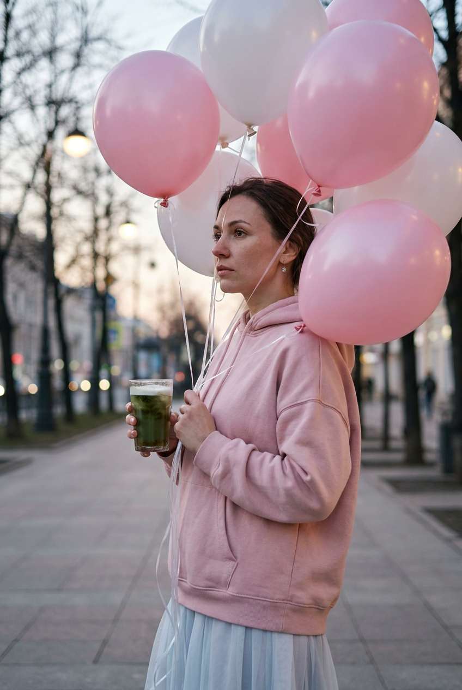
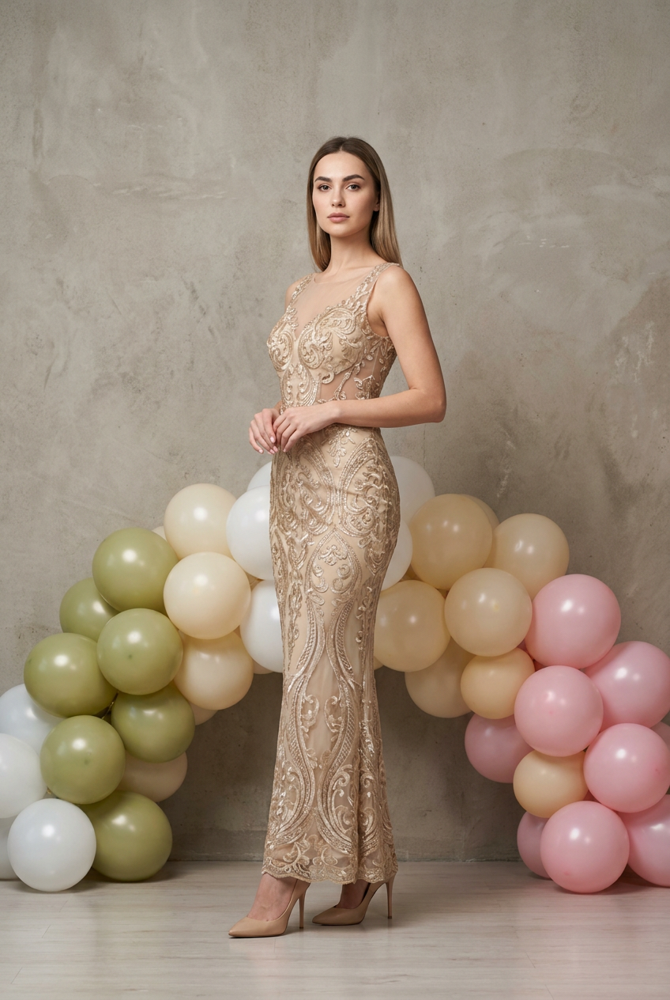
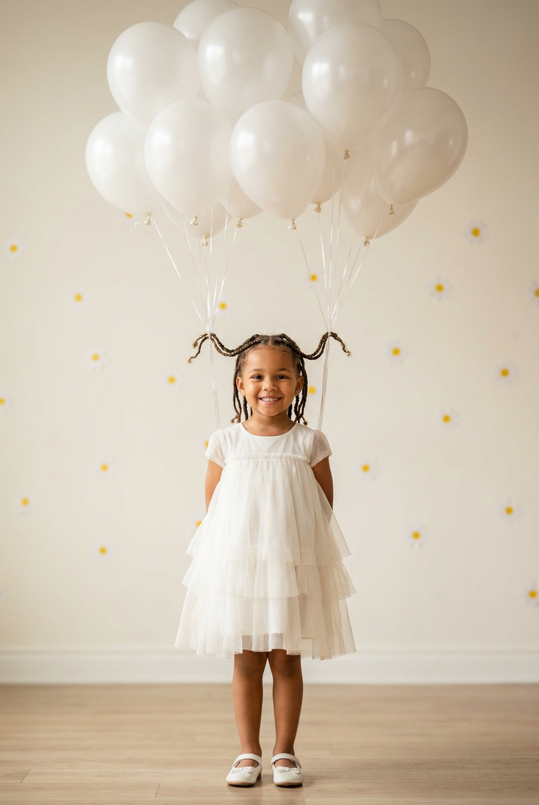
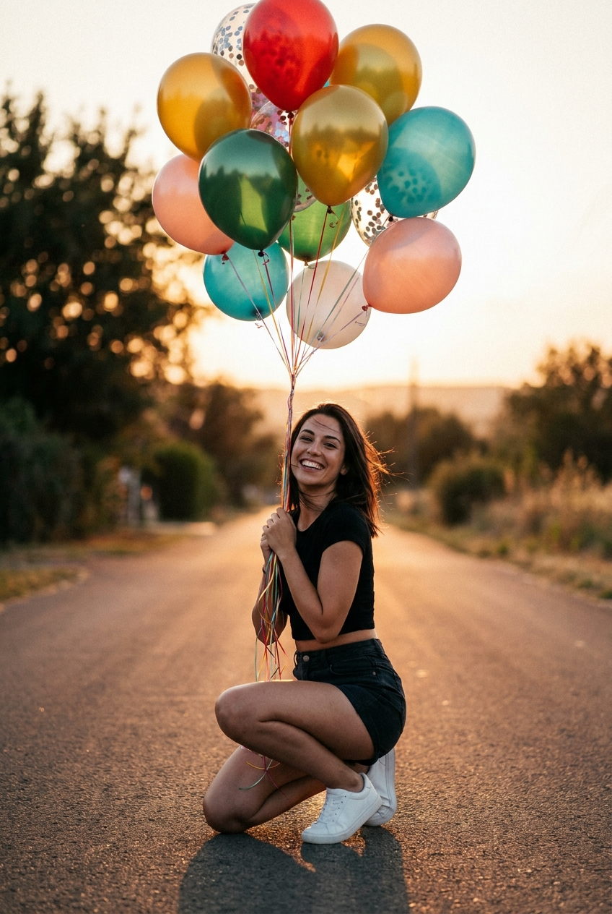
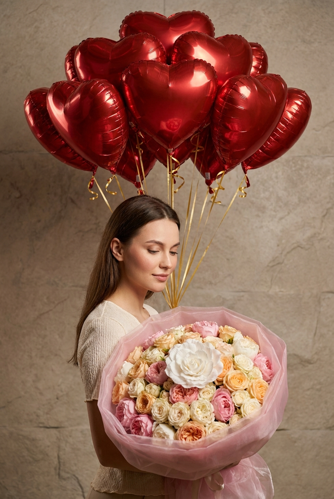
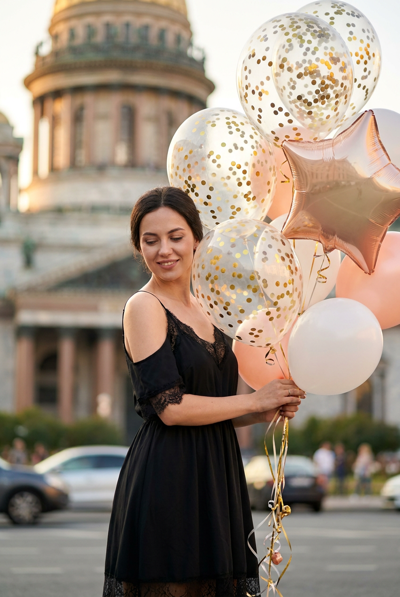
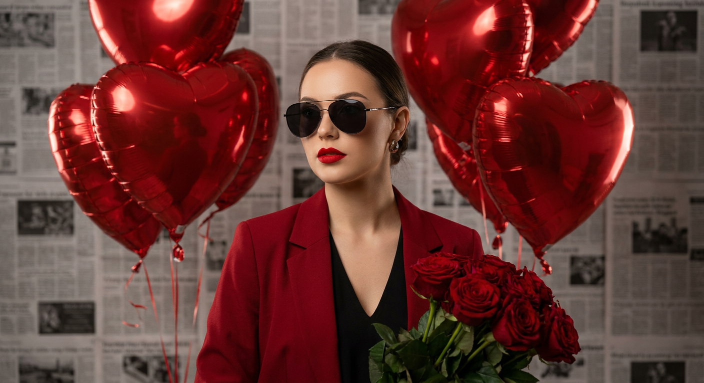
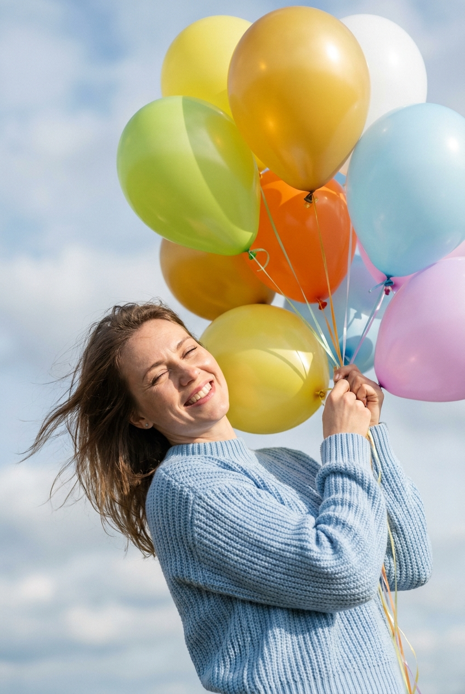
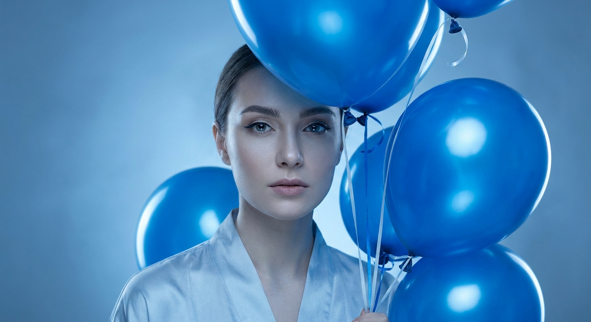
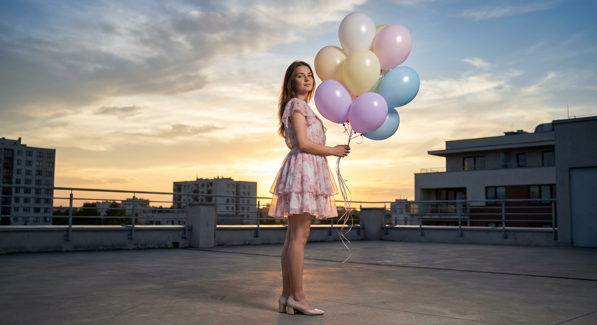

ИИ-фото с воздушными шарами: 10 промптов для нейросети

Воздушные шары легко превращают обычный портрет в кадр с настроением, но нейросеть часто путает руки, ленты, количество шаров и фактуру одежды. Хороший промпт помогает заранее задать позу, свет, композицию и детали, которые делают снимок убедительным.
В подборке — десять сценариев: от городского fashion-кадра и студийного платья до детской съёмки, букета из шаров, холодного синего портрета и романтичной сцены на крыше. Каждый текст можно использовать как основу и адаптировать под свой референс.
Как сгенерировать такое фото: пошагово
Нужен снимок анфас при ровном свете, лицо в кадре целиком, без тёмных очков и головных уборов. Разрешение от 1000 пикселей по короткой стороне. Чем чётче исходник, тем точнее модель повторит черты.
Выберите сценарий ниже и нажмите «Копировать» — текст уйдёт в буфер целиком, вместе с командой сохранения внешности. Эта команда стоит первой строкой и отвечает за то, чтобы на выходе было ваше лицо, а не случайное.
Кнопка «Сгенерировать» рядом с каждым промптом открывает модель в новой вкладке. Nano Banana Pro работает с референсом лица — в отличие от моделей, которые генерируют портрет с нуля и узнаваемость теряют.
Промпт — в поле ввода, портрет — через загрузку референса. Порядок значения не имеет, но без референса команда сохранения внешности работать не будет: модели нечего сохранять.
Для сторис и ленты берите 9:16, для превью и обложек — 4:3. Первый результат редко идеален: если поза или свет ушли не туда, поправьте соответствующую часть промпта и запустите заново. Обычно хватает двух-трёх итераций.
10 промптов для генерации
1. Городской вечер с напитком
Строго сохранить внешность по загруженному референсу: черты лица, пропорции, мимику и текстуру кожи без изменений. Фотореалистичная вертикальная street-fashion съёмка в городе в сумерках или пасмурный день. Свет мягкий, рассеянный, контраст низкий, настроение спокойное и задумчивое. На переднем плане женщина стоит в полупрофиль и смотрит в сторону, удерживая стеклянный стакан с тёмным напитком зеленоватого или светлого оттенка, льдом, пенкой и бликами на стекле. Лицо ориентировано на загруженный референс, естественная мимика и реалистичная кожа. На девушке свободный нежно-пудровый розовый худи из мягкой ткани, из-под него видна светло-голубая или серо-белая лёгкая юбка со слоями и небольшой пышностью. Небольшие серьги, естественный макияж с акцентом на губы. Рядом с героиней несколько гелиевых шаров на тонких лентах, часть шаров уходит вверх и в фон, не закрывая лицо. Натуральные городские детали, мягкое боке, объектив 50 мм, диафрагма f/2.8, вертикальный формат 4:5.
2. Платье с золотой вышивкой

Строго сохранить внешность по загруженному референсу: черты лица, пропорции, мимику и текстуру кожи без изменений. Вертикальный фотореалистичный студийный fashion-кадр, женщина в полный рост по центру композиции. Она стоит ровно и уверенно, ноги вместе или почти вместе; одна рука свободно опущена, вторая слегка согнута и поднята. Взгляд прямо в камеру, выражение нейтральное, спокойное, собранное. Сохранить черты лица по загруженному референсу, натуральную текстуру кожи, аккуратные брови и реалистичный макияж с мягким акцентом на глаза. На героине длинное бежево-золотистое платье ручной работы, прилегающий силуэт, тонкая фактурная ткань, полупрозрачные вставки и вышитый орнамент в духе барокко. Нити слегка блестят и красиво ловят свет, но вокруг модели нет лишнего декора. В руках у женщины связка воздушных шаров кремового, шампанского и бледно-золотого оттенков, тонкие ленты видны до ладоней. Чистый студийный фон, мягкий свет, детализация ткани, объектив 85 мм, f/4, формат 4:5.
3. Детская съёмка с шарами

Строго сохранить внешность по загруженному референсу: черты лица, пропорции, мимику и текстуру кожи без изменений. Фотореалистичная постановочная съёмка в домашней или детской фотостудии, вертикальный full-body кадр. В центре стоит девочка в лёгких белых туфельках, корпус немного повернут, голова слегка наклонена, поза уверенная и естественная. Она улыбается и смотрит прямо в камеру, на щеках заметен мягкий румянец, макияж отсутствует, кожа реалистичная. Лицо и индивидуальные черты соответствуют загруженному референсу. На девочке нежное белое платье из воздушной ткани: короткие или полурукава, аккуратная посадка по талии, пышная юбка с несколькими слоями и воланами. Волосы слегка приподняты вверх: к отдельным прядям, косичкам или их концам прикреплены тонкие прозрачные нити, а на них закреплены небольшие пастельные воздушные шары. Шарики мягко тянут волосы вверх, но причёска остаётся правдоподобной. Светлый интерьер без лишних предметов, мягкий рассеянный свет, объектив 50 мм, f/3.5, разрешение 2048×2560.
4. Букет шаров на дороге

Строго сохранить внешность по загруженному референсу: черты лица, пропорции, мимику и текстуру кожи без изменений. Тёплый фотореалистичный уличный кадр на закате или в мягком дневном свете, вертикальная композиция, камера установлена очень низко, почти у поверхности асфальта. Линия дороги ведёт взгляд к девушке, а затем к большому букету шаров. Женщина сидит на коленях на асфальтированной дороге: одна нога ближе к объективу, корпус наклонён вперёд, лицо развернуто к камере. У неё широкая улыбка, живой взгляд, натуральный макияж, ровная кожа, волосы слегка развеваются ветром. На девушке чёрный летний комплект — короткий топ и юбка или шорты с высокой посадкой, на ногах чистые белые кроссовки или кеды со шнурками. У груди она держит большой букет гелиевых шаров на тонких лентах: белые, красные, розовые и прозрачные шары с реалистичными бликами. Лицо соответствует загруженному референсу. Кинематографичный свет, лёгкое боке, объектив 28 мм, f/2.8, формат 4:5.
5. Цветочный шар-букет

Строго сохранить внешность по загруженному референсу: черты лица, пропорции, мимику и текстуру кожи без изменений. Фотореалистичный праздничный снимок в студии или уютной домашней фотозоне, вертикальный кадр. Женщина стоит на переднем плане в пол-оборота, корпус чуть повернут вправо, взгляд опущен на букет, выражение лица нежное и спокойное. Черты лица соответствуют загруженному референсу, кожа натуральная, макияж мягкий, брови аккуратные, на щеках лёгкий румянец. На ней светлый молочный или белый тонкий топ, платье либо накидка с деликатной фактурой; допустимы полупрозрачные детали, но без откровенного акцента. В нижней и центральной части кадра героиня держит крупный круглый букет, похожий на бомбон из цветов: пионовидные розы, кремовые, персиковые и нежно-розовые бутоны, среди которых спрятаны небольшие пастельные воздушные шары. Добавить тонкие ленты, несколько шаров над цветами и мягкие блики на их поверхности. Чистая эстетика, без принтов и визуального шума, мягкий студийный свет, объектив 85 мм, f/3.2, формат 4:5.
6. Шары у старинного купола

Строго сохранить внешность по загруженному референсу: черты лица, пропорции, мимику и текстуру кожи без изменений. Фотореалистичный street-fashion кадр у исторического здания с крупным куполом или колоннадой. Вертикальная композиция, камера на уровне глаз, лёгкий наклон кадра добавляет динамику. Золотой час, тёплый дневной свет, мягкие золотистые оттенки. На переднем плане женщина стоит в пол-оборота влево и смотрит вниз на воздушные шары, её выражение нежное и радостное, на лице естественный макияж, небольшие заметные серьги, реалистичная текстура кожи. Черты лица взять по загруженному референсу. На девушке элегантное чёрное платье на тонких бретелях с кружевными вставками и открытыми плечами. В руках она удерживает несколько гелиевых шаров пастельных оттенков — белого, кремового, пудрово-розового и светло-голубого; ленты собраны в одной руке. На заднем плане размытая европейская архитектура, далеко видны автомобили и прохожие в боке, никаких читаемых вывесок и надписей. Объектив 50 мм, f/2, вертикальный формат 4:5.
7. Красный fashion-портрет

Строго сохранить внешность по загруженному референсу: черты лица, пропорции, мимику и текстуру кожи без изменений. Фотореалистичный студийный портрет в духе fashion editorial, вертикальный кадр по грудь. В центре — уверенная женщина с лицом по загруженному референсу, выразительный взгляд, безупречно собранный макияж и насыщенная красная помада. На ней крупные солнцезащитные очки с тонкой оправой, тёмные линзы дают лёгкий блик студийного света. Красный элегантный жакет с широкими лацканами и драматичными складками ткани надет поверх чёрного топа или платья с V-образным вырезом. Небольшие серьги поддерживают цветовую гамму образа. Корпус слегка повернут, руки частично входят в кадр. У груди женщина держит пышный букет красных роз: много плотных лепестков, густая фактура, глубокие полутени, глянцевые края и высокая детализация. Рядом можно добавить несколько бордовых и прозрачных шаров на тонких лентах, чтобы они не спорили с цветами. Контрастный студийный свет, нейтральный фон, объектив 85 мм, f/2, формат 4:5.
8. Небо, ветер и голубые шары

Строго сохранить внешность по загруженному референсу: черты лица, пропорции, мимику и текстуру кожи без изменений. Фотореалистичный уличный портрет в солнечный день, вертикальная композиция по грудь и плечи с уходом вверх в светлое небо. На заднем плане мягкие облака, чистый воздушный свет и ощущение лёгкости. Женщина слегка откинулась назад или наклонилась в сторону, будто лежит или присела, волосы разлетаются от ветра. Она прищуривается от солнца и улыбается, настроение живое и радостное. Лицо, пропорции и индивидуальные черты соответствуют загруженному референсу, кожа с естественными порами и мягкими тенями, без пластикового эффекта. На девушке светло-голубой вязаный свитер средней или крупной вязки, хорошо видны рёбра, петли и мягкие складки. Руки частично попадают в кадр: героиня прижимает к себе связку шаров или держит их за тонкие ленточки. Над лицом и сбоку парят гелиевые шары белого, голубого и серебристого оттенков, некоторые частично выходят за границы кадра. Объектив 35 мм, f/2.8, формат 4:5.
9. Синий портрет с шарами

Строго сохранить внешность по загруженному референсу: черты лица, пропорции, мимику и текстуру кожи без изменений. Крупный фотореалистичный студийный fashion-портрет в вертикальном формате. В центре женщина с выразительными глазами и слегка задумчивым спокойным выражением лица. Макияж аккуратный, тонкая подводка подчёркивает глаза, брови ровные, кожа реалистичная, без эффекта пластика. Черты лица соответствуют загруженному референсу. Вся сцена построена на холодной монохромной сине-голубой палитре: мягкий заполняющий и контровой свет создают вокруг волос и лица деликатное свечение. Женщина прижимает к себе четыре-шесть гелиевых шаров из глянцевого латекса насыщенного голубого цвета. На поверхности шаров видны яркие блики, отражения студийных источников и мягкие градиенты. Один большой шар занимает верхнюю часть кадра, остальные располагаются рядом с лицом и ниже, в зоне плеч и груди, но не перекрывают глаза. Минимальный студийный фон, объектив 85 мм, f/1.8, высокая детализация, разрешение 2048×2560.
10. Пастельные шары на крыше

Строго сохранить внешность по загруженному референсу: черты лица, пропорции, мимику и текстуру кожи без изменений. Фотореалистичная съёмка на крыше или террасе во время заката, панорамное настроение и много воздуха в композиции. Вертикальный кадр с ощущением широкого пространства, героиня показана в полный рост в центре. Девушка стоит в полупрофиль или профиле, корпус немного развёрнут к камере, поза уверенная, но естественная, выражение лица спокойное и слегка мечтательное. Лицо и индивидуальные особенности соответствуют загруженному референсу. На ней лёгкое короткое платье с цветочным или пастельным принтом в мягких розово-белых тонах, многослойная юбка, на ногах светлые туфли на небольшом каблуке. В руках связка воздушных шаров из восьми-двенадцати глянцевых круглых шаров: белые, кремовые, бледно-жёлтые, очень светло-розовые, нежно-лавандовые и светло-голубые. Тонкие ленты натянуты ветром, часть шаров поднимается выше головы. На шарах реалистичные блики и отражения закатного неба. Тёплый контровой свет, город вдали, объектив 35 мм, f/4, формат 4:5.
Что важно учесть в этом стиле
Шары должны быть частью композиции, а не случайным декором. Укажите их количество, цвет, материал, размер и положение относительно лица. Для гелиевых шаров добавляйте тонкие ленты, натяжение и направление вверх — так сцена выглядит физически правдоподобнее.
Отдельно описывайте руки, пальцы и контакт с предметами. Нейросеть часто рисует лишние пальцы, слипшиеся ленты или шар, проходящий сквозь ладонь. Для портретов задавайте объектив: 85 мм даст мягкое сжатие перспективы, 35 мм оставит больше воздуха и окружения. Если нужен референс лица, лучше генерировать несколько вариантов и выбирать кадр с наиболее точным сходством.
Идеи для вариаций
- Замените латексные шары на матовые бумажные или прозрачные шары с конфетти.
- Добавьте цифры, буквы или короткую надпись, но проверьте текст вручную: генераторы часто искажают символы.
- Перенесите съёмку на пустой пляж, в вагон метро, на ярмарку или в цветочный магазин.
- Сделайте цветовой акцент: один красный шар среди белых или серебряный букет в синей сцене.
- Попросите нейросеть добавить лёгкий ветер, ленты в движении и отражение шаров в витрине.
- Для детского кадра замените шарики в волосах на бумажные подвесы или одну большую связку в руке.
Как собрать свой промпт
Начните с формата и типа съёмки: вертикальный портрет, full body, студия или улица. Затем задайте героя, одежду, позу, выражение лица и действие с шарами. После этого опишите свет, фон, объектив и глубину резкости. Такая последовательность помогает модели не потерять главные условия.
Не перегружайте текст случайными эпитетами. Лучше написать «шесть глянцевых голубых латексных шаров, один у верхней границы кадра», чем просто «красивые воздушные шары». Для точного результата заложите 4–8 генераций, меняя за один раз только позу, цвет или масштаб шаров. Финальный кадр можно отдельно доработать масками рук, лент и мелкого текста.
Ошибки, из-за которых кадр не получается
- Слишком общие описания. Формулировка «девушка с шарами» не задаёт ни композицию, ни материал, ни действие.
- Противоречивый свет. Закатный контровик и холодный жёсткий студийный источник одновременно часто дают неестественные тени.
- Непонятные связи между предметами. Указывайте, где находятся ленты, какая рука их держит и куда тянутся шары.
- Перегруженный фон. Вывески, прохожие и мелкие детали отвлекают от лица и повышают число артефактов.
- Слишком точные ожидания от текста. Надписи на шарах, цифры и буквы лучше проверять после генерации и исправлять отдельно.
- Один запуск без отбора. Даже хороший промпт может дать ошибки в пальцах или лице, поэтому нужны несколько попыток.
Частые вопросы
Как сделать такое ИИ-фото бесплатно?
Можно попробовать Kandinsky и Шедеврум: у них есть бесплатная генерация, но точность лица по референсу и управление позой ограничены. В Krea AI и Arena.ai доступны бесплатные режимы с лимитами, однако набор функций и качество могут меняться. Для сложных сцен с руками и лентами обычно потребуется несколько попыток, а загрузка референса поддерживается не во всех режимах.
Как сохранить сходство лица с референсом?
Используйте чёткий портрет без сильных фильтров, задавайте нейтральный ракурс и не меняйте одновременно возраст, причёску и выражение лица. Если сервис поддерживает силу изображения или степень влияния референса, начните со среднего значения: слишком сильное влияние ломает сцену, слишком слабое — сходство.
Почему нейросеть искажает руки и ленты?
Руки взаимодействуют сразу с несколькими объектами, поэтому модель может добавить пальцы, перепутать кисти или провести ленту через ладонь. Упростите позу, укажите, какая рука держит связку, и генерируйте сцену с небольшим числом шаров. Исправление кистей и тонких нитей отдельной маской часто даёт лучший результат.
Как сделать воздушные шары реалистичными?
Пропишите материал и физику: глянцевый латекс, блики, отражение источника света, тонкие натянутые ленты, подъём вверх под действием гелия. Добавьте разные размеры и частичное перекрытие объектов. Для матового эффекта замените глянцевую поверхность на soft matte и уберите резкие отражения.